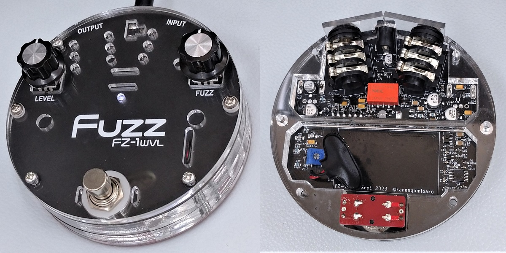
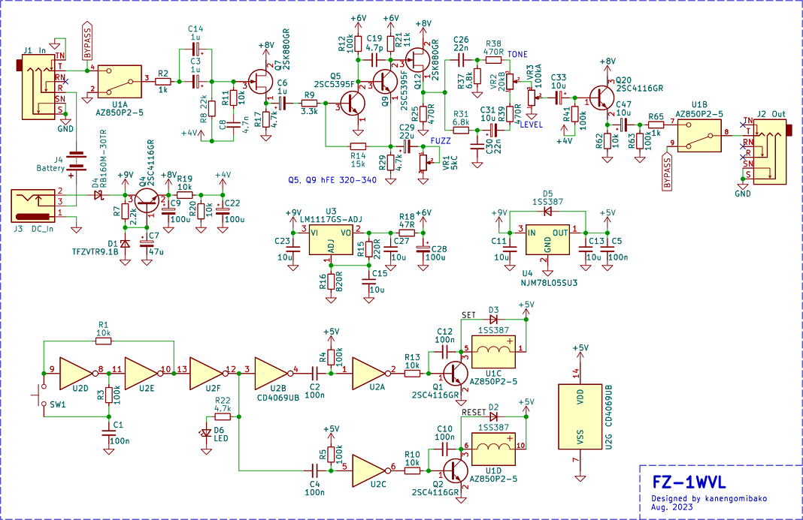

FZ-1WVL
2023年11月08日 カテゴリー：自作エフェクター（アナログ）

以前アクリル筐体のFuzz Faceを製作したのですが、ファズに関する知識があまりない頃に作ったものなので、何となく中身を作り直したくなりました。そこで、最近解析したBOSS FZ-1Wを簡略化したものを入れることにしました。「VL」はヴィンテージモード、ライトバージョンという意味合いです。
▽回路図

内部スペースがあまりないため、トゥルーバイパスでヴィンテージモードのみとしました。トーンは省くことも考えましたが、やはり必要だろうと思い、トリマーで調整できるようにしています。電源はできるだけ簡略化せず、誤って18Vを入力しても大丈夫なように配慮しました（参考→BD-2W）。ラッチングリレー周辺はGEOのLatching Relay Bypass Circuitを元にしたものです。以前は9V仕様でしたが、電池の減りで安定動作しなくなる可能性を考え5Vとしました。
メインのトランジスタ2SC5395Fはサトー電気で100個購入していたのですが、運が悪かったのかhFEが340以上のものがありませんでした。仕方なく320～330程度のものを使用しています。
一番問題だったのがポットで、Cカーブ5kΩのネジ部がない小型ポットがなかなか見つかりません。PT01-D120D-A502というものがあったのですが、逆対数という表記なのに実際はAカーブ（対数）となっています（そのうち表記が修正されるかもしれません）。とりあえず、AliExpressにあったメーカー不明のものを購入しました。少しカーブの変化が急な気がするものの、問題なく使えています。
基本的にはFZ-1Wと同じ音で、筐体が円形になったことで何となくファズフェイスに近くなったような気がします。ファズとしては部品点数がなかなか多いですが、トランジスタを選別せずR21をトリマーにするといった対応をすればクローン製作もやりやすいのではないかと思います。